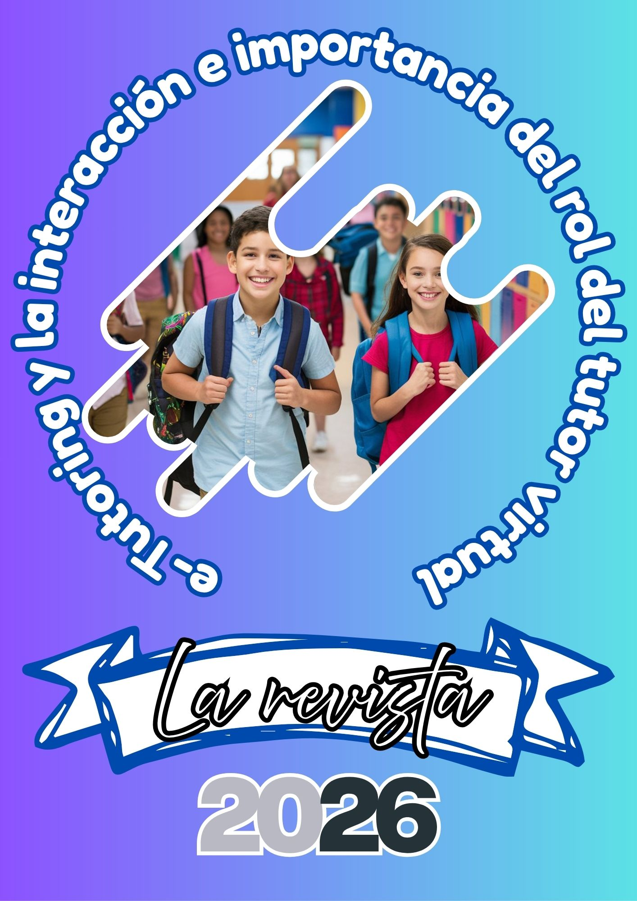
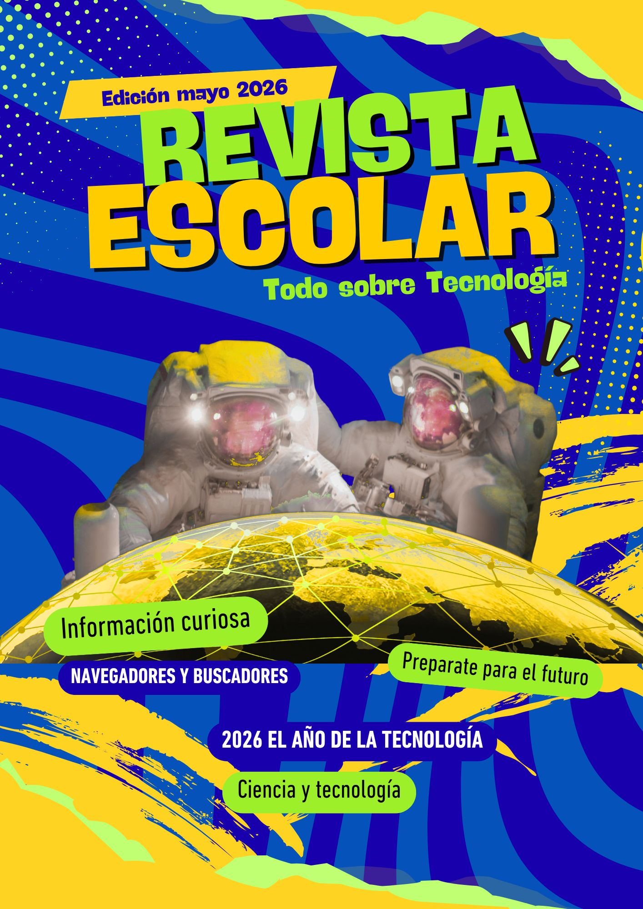
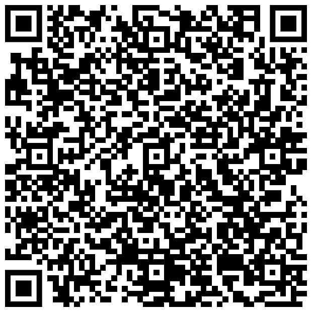

Tercero Básico | Diseño Instruccional 2026
Tecnologías del Aprendizaje y la Comunicación TAC
Grado: Tercero Básico
Las Tecnologías del Aprendizaje y la Comunicación (TAC) orientan las Tecnologías de la Información y la Comunicación (TIC) hacia usos formativos; es decir, a una reorientación para que el proceso de enseñanza-aprendizaje-evaluación esté centrado en el estudiante y potencialice, a su vez, las habilidades para utilizar el conjunto de servicios, redes, software y dispositivos que ofrece la tecnología digital...
El área pretende que los estudiantes desarrollen habilidades que les permitan aprender a aprender, generar nuevos conocimientos y experiencias y utilizar las herramientas digitales como un vehículo para innovar...
| Semana | Contenidos (Declarativos, procedimentales y actitudinales) | Indicadores de logro | Actividades de aprendizaje y su evaluación / Medios | Quehaceres de los participantes | Quehaceres del tutor |
|---|---|---|---|---|---|
| 1 |
Declarativos: Navegadores y Buscadores (Definición de navegador, Buscador, ejemplos). Procedimentales: Crea un cuadro comparativo identificando las principales diferencias entre un navegador y un buscador. Actitudinales: Muestra una actitud crítica y analítica al seleccionar navegadores y buscadores que garanticen la seguridad de su información personal. |
Elige la herramienta y la plataforma apropiadas para transmitir sus ideas, trabajos o mensajes. |
Actividades: Ver video, visualizar infografía, revisar enlace de apoyo y elaborar cuadro comparativo en procesador de texto. Medios: Plataforma Moodle, Video, Infografía, Enlace informativo, Formato de cuadro comparativo. Evaluación: Rúbrica. |
Acceder al video y enlaces; Editar formato; Elaborar el cuadro comparativo; Resolver dudas en WhatsApp. | Revisar y habilitar enlaces; Compartir formato; Habilitar espacio en plataforma; Dar solución a dudas; Realimentar tareas. |
| 2 |
Declarativos: Buscadores Académicos (¿Qué es?, Utilidad, Buscadores más utilizados). Procedimentales: Elabora una infografía sobre los buscadores académicos donde incluye: Definición, Utilidad y Ejemplos. Actitudinales: Reconoce la utilidad de los buscadores especializados como un "andamiaje" digital que facilita su acceso a la cultura científica global. |
Sintetiza la información recopilada en buscadores académicos y la transforma en un recurso visual (infografía) que explica con claridad la definición, utilidad y ejemplos. |
Actividades: Ver video, revisar enlace sobre infografías en Canva y elaborar la infografía. Medios: Plataforma Moodle, Video Buscadores académicos, Tutorial de Canva. Evaluación: Rúbrica. |
Acceder al video y enlaces; Acceder a Canva; Elaborar la infografía; Resolver dudas en WhatsApp. | Revisar y habilitar enlaces; Compartir material de apoyo; Habilitar espacio en plataforma; Dar solución a dudas; Realimentar tareas. |
Tarea: Elaborar un cuadro comparativo sobre las principales características de un navegador y un buscador.
Tarea: Elaborar una infografía sobre los buscadores académicos utilizando la herramienta digital Canva.
Diagnóstica: Identificación de conocimientos previos vía WhatsApp.
Formativa: Acompañamiento constante y resolución de dudas en tiempo real.
Sumativa: Entrega del producto digital en Moodle para valorar el alcance del indicador de logro.
Se utilizará una Rúbrica Analítica que evalúa dimensiones Declarativas, Procedimentales y Actitudinales.
| Criterios | Excelente (100%) | Bueno (75%) | Necesita Mejorar (50%) |
|---|---|---|---|
| Dominio de Conceptos (Declarativo) | Define con total claridad qué es un navegador y un buscador, proporcionando ejemplos vigentes y correctos de cada uno. | Define ambos conceptos, pero los ejemplos son limitados o confunde algún elemento menor entre ellos. | Presenta definiciones incorrectas o no logra diferenciar un navegador de un buscador mediante ejemplos. |
| Análisis Comparativo (Procedimental) | Identifica y redacta al menos 3 diferencias fundamentales entre las herramientas, demostrando capacidad de síntesis. | Identifica diferencias, pero estas son superficiales o presenta menos de las tres solicitadas. | El cuadro no muestra comparaciones reales o la información es confusa y desorganizada. |
| Seguridad y Crítica (Actitudinal) | Propone criterios claros para seleccionar herramientas que protejan la seguridad de su información personal. | Menciona la importancia de la seguridad, pero no propone acciones o criterios de selección específicos. | No incluye ninguna reflexión o criterio relacionado con la seguridad de su información personal. |
| Uso de Tecnología y Formato | Utiliza el procesador de texto de forma organizada, siguiendo el formato compartido y entregando en el tiempo estipulado. | Emplea la herramienta digital, pero el formato presenta descuidos visuales o errores menores de edición. | El trabajo carece de formato, es difícil de leer o muestra un manejo deficiente del procesador de texto. |
| Comunicación y Seguimiento | Resuelve dudas en los canales oficiales y sigue todas las instrucciones proporcionadas por el tutor en Moodle. | Sigue la mayoría de las instrucciones, pero su participación en la resolución de dudas fue mínima. | No sigue las instrucciones de la plataforma y el trabajo presenta omisiones graves en los requisitos. |
| Criterios | Excelente (100%) | Bueno (75%) | Necesita Mejorar (50%) |
|---|---|---|---|
| Contenido Técnico (Declarativo) | Define con claridad qué es un buscador general y uno académico, incluyendo utilidad y ejemplos correctos de los más utilizados. | Incluye las definiciones y ejemplos, pero la explicación de la utilidad es breve o poco clara. | Omite definiciones básicas o confunde los buscadores académicos con sitios web generales. |
| Capacidad de Síntesis (Procedimental) | Sintetiza la información de forma efectiva, utilizando frases cortas y precisas que facilitan la comprensión del tema. | Presenta la información completa, pero utiliza párrafos demasiado largos que dificultan la lectura rápida. | No hay síntesis; el contenido es una copia textual de las fuentes o está incompleto según lo solicitado. |
| Uso de Canva y Diseño (Procedimental) | Demuestra dominio de Canva al integrar íconos, imágenes y una estructura visual equilibrada y atractiva. | Utiliza la herramienta Canva, pero el diseño es poco organizado o la combinación de colores dificulta la lectura. | El diseño es deficiente, no utiliza recursos visuales (imágenes/íconos) o no empleó la herramienta sugerida. |
| Valoración Científica (Actitudinal) | Reconoce explícitamente el valor de los buscadores académicos como herramientas para acceder a información con rigor científico. | Menciona el uso de buscadores especializados, pero no profundiza en su importancia para el ámbito académico. | No muestra ninguna reflexión sobre la utilidad o importancia de usar fuentes académicas confiables. |
| Seguimiento de Instrucciones | Cumple con todos los elementos requeridos, accede a los materiales de apoyo y entrega puntualmente en Moodle. | Cumple con la mayoría de los elementos, pero omitió revisar alguno de los enlaces de apoyo o tutoriales. | El trabajo no cumple con los requisitos mínimos de la asignación o fue entregado fuera del espacio habilitado. |
Definición: Son unidades de aprendizaje estructuradas de forma digital que requieren la participación activa del estudiante. A diferencia de la lectura pasiva, una e-actividad busca que el alumno interactúe, cree o resuelva problemas en entornos virtuales.
Función: Su función principal es dinamizar el proceso de enseñanza-aprendizaje, permitiendo que el estudiante pase de ser un espectador a un protagonista de su propio conocimiento.


Realiza las siguientes actividades prácticas para reforzar tus conocimientos:

Escanea el código para participar